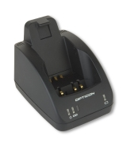

| Image |  | ||||||||||||||||||||||||||||||||||||||||||||||||||||||||||||||||||||||||||||||||
| Dip-switches |
CRD1001You can find the DIP switch bank under the rectangular black plastic cover at the bottom of the CRD1001.
|
||||||||||||||||||||||||||||||||||||||||||||||||||||||||||||||||||||||||||||||||
| Auto baudrate |
When the CRD1001 is set to 'autobaudrate', the PC controls the setting of
the CRD baudrate controller. In order to be able to do that, the PC uses
the DTR and RTS lines. The procedure to set the baudrate is shown below: |
||||||||||||||||||||||||||||||||||||||||||||||||||||||||||||||||||||||||||||||||
| CRD1002 |
CRD1002The CRD1002 is a charging and modem cradle for the OPH1004. The cradle is equipped with two slots in order to charge both the terminal and a spare battery. Data is transmitted to a remote host through a dialup connection via a normal telephone cable.The CRD1002 is equipped with an IrDA interface allowing data transfer when the scanner is inserted for charging. OPH1004 applications that wish to communicate with remote hosts over the dialup connection must use the TCP/IP library, provided in this kit. |
||||||||||||||||||||||||||||||||||||||||||||||||||||||||||||||||||||||||||||||||
| CRD1003 |
CRD1003The CRD1003 is a charging and GSM modem cradle for the OPH1004. The cradle is equipped with two slots in order to charge both the terminal and a spare battery. Data is transmitted to a remote host through a cellular data connection to the Internet. The CRD1003 must be provisioned with an active SIM card to make a cellular data connection.The CRD1003 is equipped with an IrDA interface allowing data transfer when the scanner is inserted for charging. OPH1004 applications that wish to communicate with remote hosts over the cellular connection must use the TCP/IP library, provided in this kit. |
||||||||||||||||||||||||||||||||||||||||||||||||||||||||||||||||||||||||||||||||
| CRD1004 |
CRD1004The CRD1004 is a charging and communication cradle for the OPH1003 with a built-in Ethernet interface. It provides similar functions as a cradle with serial interface combined with an ECB1000 Ethernet Converter Box. Towards the terminal it simulates an analog modem for internet access using the PPP protocol.The CRD1004 also has an USB interface. Using this interface the cradle can be configured and its firmware can be upgraded. It can also be operated as an USB-serial cradle. This enables the user do e.g. download new software into the terminal. |